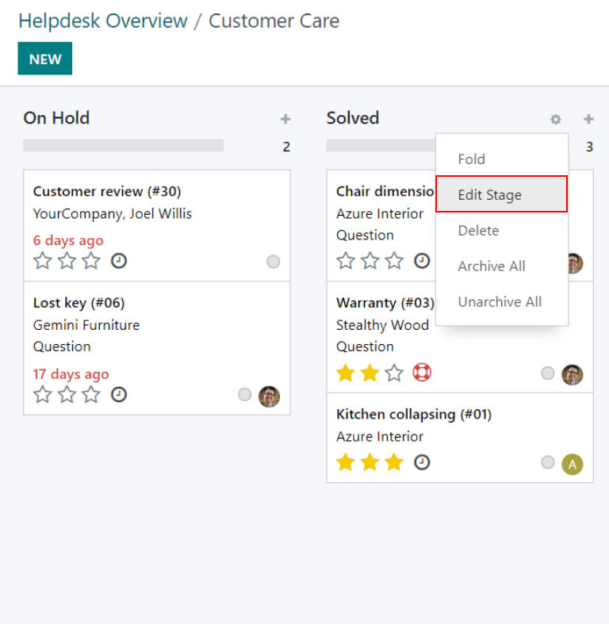
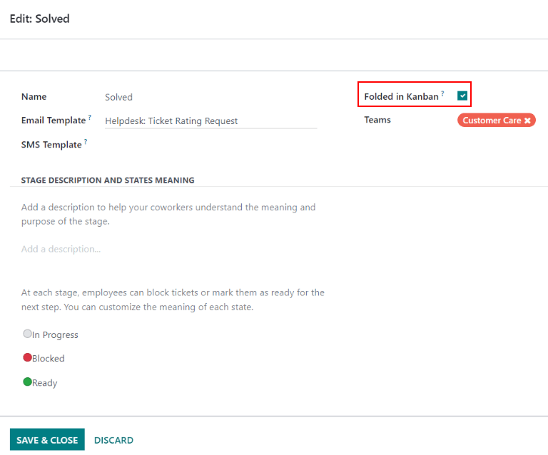
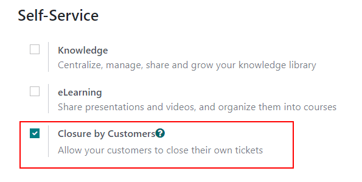
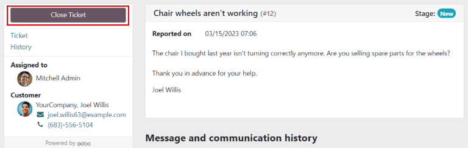

Cerrar tickets¶
Una vez que haya finalizado el trabajo del ticket de Servicio de asistencia en Odoo, puede cerrarlo de varias maneras. Cerrar manualmente los tickets resueltos mantiene el flujo de trabajo actualizado, mientras que cerrar automáticamente los tickets inactivos previene bloqueos innecesarios. Permitir a los clientes cerrar sus propios tickets minimiza la confusión sobre si un problema se considera resuelto o no. El resultado es una mayor capacidad operativa para los equipos de soporte y una mayor satisfacción del cliente.
Cerrar de forma manual los tickets resueltos¶
A medida que resuelve el ticket, este pasa a la siguiente fase del proceso. Una vez resuelto el problema, el ticket pasa a una etapa plegada y se marca como cerrado.
Para plegar una etapa, vaya al tablero de y haga clic en un equipo para abrir el flujo de trabajo. Pase el ratón por encima del encabezado de una etapa y haga clic en el icono de engranaje que aparece en la esquina superior derecha de la columna kanban de esa etapa.
Advertencia
Si hace clic en el icono de engranaje aparecerá la opción de Plegar la etapa. Este ajuste plegará la etapa temporalmente para simplificar la vista kanban. Esto no cierra los tickets en esta etapa. Tampoco pliega la etapa de forma permanente. Si desea plegar una etapa para poder marcar los tickets como cerrados, siga los siguientes pasos.
En el menú que aparece, seleccione Editar etapa. Esto abrirá la configuración de la etapa. Marque la casilla Plegado en kanban en la parte superior de la ventana y, a continuación, Guardar y cerrar para confirmar los cambios. Ahora, los tickets en esta etapa se considerarán como cerrados.

Cerrar automáticamente los tickets inactivos¶
Se pueden cerrar automáticamente los tickets que permanezcan inactivos durante un periodo de tiempo determinado. En ese momento, pasarán a una etapa plegada.
Vaya a la página de configuración del equipo en . En la sección Autoservicio, active Cierre automático.
Si una de las etapas del equipo está configurada para plegarse en la vista kanban, será la selección predeterminada en el campo Mover a etapa. Si el equipo tiene más de una etapa plegada, la etapa que ocurra primero en el flujo de trabajo será la predeterminada. Si no hay ninguna etapa plegada, la selección predeterminada será la última etapa del flujo.
El campo Después de días de inactividad es 7 de forma predeterminada, pero puede cambiarlo si así lo desea.
Advertencia
El campo Después de días de inactividad no tiene en cuenta el calendario laboral a la hora de registrar el tiempo que un ticket ha estado inactivo.
Si solo deben utilizarse determinadas etapas para realizar un seguimiento de los días de inactividad, pueden añadirse al campo En etapas.
Example
El flujo de un equipo se crea con las siguientes etapas:
NuevoEn progresoRetroalimentación de los clientesCerrado
Los tickets pueden permanecer en la etapa Retroalimentación de los clientes, porque una vez resuelto un problema, es posible que los clientes no respondan de inmediato. En ese momento, los tickets pueden cerrarse automáticamente. Sin embargo, los tickets en las etapas Nuevo y En progreso pueden permanecer inactivos debido a problemas de asignación o carga de trabajo. El cierre automático de estos tickets provocaría que los problemas no se resuelvan.
Por lo tanto, los ajustes de Cierre automático se configurarían de la siguiente manera:
Cierre automático: seleccionado
Mover a la etapa:
resueltoDespués de ``7días de inactividad
En etapas:
Retroalimentación de los clientes
Permitir a los clientes cerrar sus tickets¶
Si habilita Cierre por clientes, esto permitirá a los clientes cerrar sus propios tickets cuando determinen que su problema se ha resuelto.
Primero vaya a y seleccione un equipo. En la página de configuración del equipo, vaya a la sección Autoservicio y seleccione la casilla Cierre por clientes.
Una vez activados los ajustes de cierre del ticket, el botón Cerrar ticket será visible para los clientes cuando vean su ticket a través del portal de clientes.
Nota
Los clientes pueden ver sus tickets al hacer clic en el enlace Ver el ticket que reciben por correo electrónico. El enlace se incluye en la plantilla Solicitud de confirmación de forma predeterminada a la primera etapa de un equipo. Este enlace no requiere que el cliente tenga acceso al portal para ver o responder su ticket.
Los clientes con acceso al portal podrán ver sus tickets en .